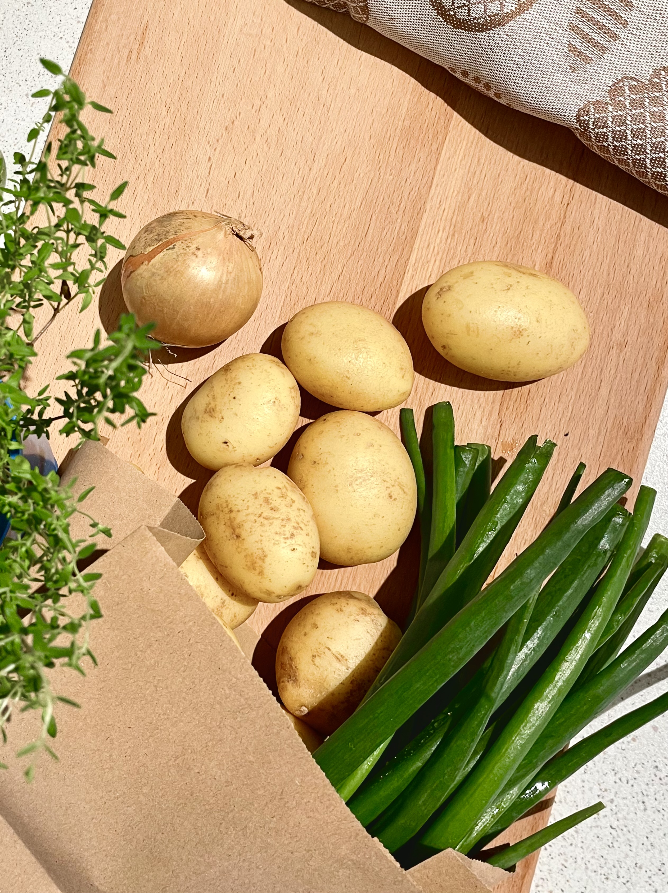
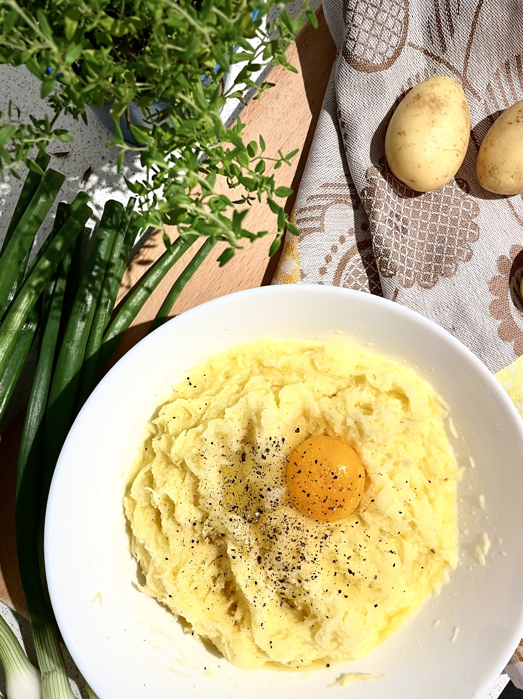
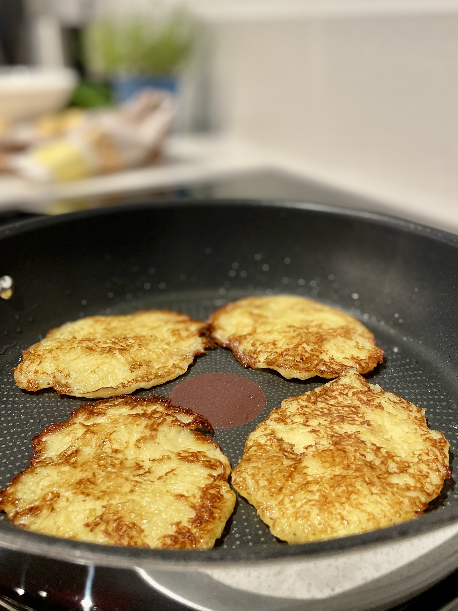
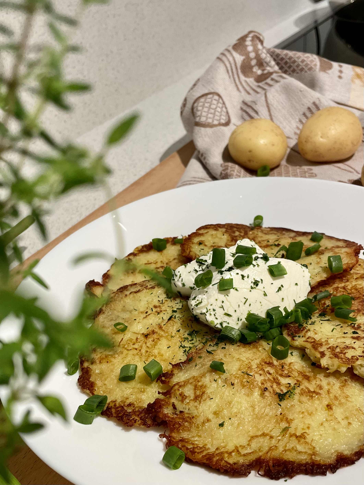

ZUTATEN für 4 Portionen
- Kartoffeln, mehlig kochend 1kg
- Eier 1 Stk
- Zwiebel 1 Stk
- Schmand 20% 250g
- Öl für die Pfanne
- Kraüter
- Zalz und Gewürze nach Geschmack

Schritt 1
Für die Kartoffelpfannkuchen zuerst die Zutaten vorbereiten. Die Gemüse und Kraüter waschen und schälen.
Zwiebeln verleihen den Pfannkuchen Saftigkeit und verhindern, dass die Kartoffeln braun werden. Ich empfehle, Dill, grünen Zwiebeln oder Petersilie als Kraüter zu verwenden.

Schritt 2
Die Kartoffeln und der Zwiebel auf einem Gemüsehobel grob oder fein reiben. Ich bevorzuge eine feine Reibe, da die Pfannkuchen dadurch zarter und besser frittiert werden.
Anschließend die Eier, das Salz, gemahlener schwarzer Pfeffer und Gewürze zum geriebenen Gemüse hinzufügen und alle Zutaten gut vermischen, um eine homogene Masse zu erhalten.

Schritt 3
Nun das Öl in einer beschichteten Pfanne erhitzen. Aus der Kartoffelmasse mit einem Esslöffel kleine Laibchen formen, etwas flach drücken und in der Pfanne portionsweise beidseitig goldbraun braten.

Schritt 4
Servieren Sie die fertigen Pfannkuchen heiß.
Traditionell werden die Pfannkuchen mit saurer Sahne (Schmand) serviert, aber auch hier sind Variationen möglich.
Wenn Sie das Gericht weniger fettig machen wollen, können Sie die saure Sahne durch griechischen oder anderen fettarmen Joghurt ersetzen. Der Joghurt kann mit fein gehacktem Dill, Petersilie oder grünen Zwiebeln bestreut werden.
Zu den Kartoffelpfannkuchen passt ein Salat aus frischem Gemüse der Saison, eingelegtes oder gesalzenes Gemüse, eingelegte Pilze, Räucherlachs usw.
Smachna estsi!